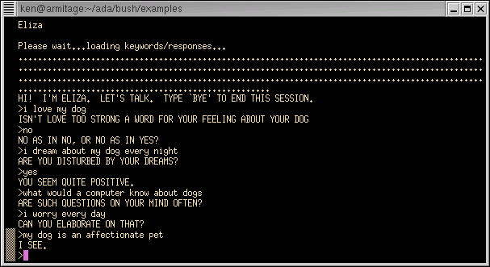
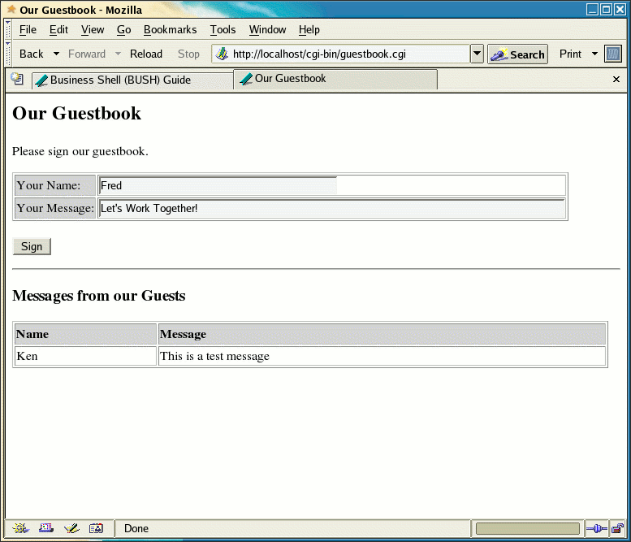

![[BUSH User Guide]](bush_title_bar.gif)
|
This tutorial section assumes that you have a basic knowledge of computer programming.
If you are familiar with Ada, there are a few things to remember:
When BUSH is started without an argument, it presents you with a
welcome
message and a command prompt, a "=>". From this prompt, you
can
declare
variables, execute AdaScript statements, or run external
commands.
BUSH is case-sensitive, as are many other shells, because
UNIX/Linux environment variables are also case-sensitive. This
means that BUSH treats "IF", "if" and "If" as three different words.
BUSH will terminate your session by the
command return (or logout for a login shell).
You can also terminate your session by typing a Control-D (the UNIX
end-of-file character).
The help command presents a short summary of recognized BUSH commands.
![[BUSH help command]](bush_2.gif)
Figure: Screenshot of an interactive BUSH session
For a brief description of a particular topic or command, use help and the topic name.
=> help delay
delay - wait (sleep) for a specific time
delay secs
Complete descriptions of all of BUSH commands can be found in the
Reference section of this manual. Summaries of all built-in packages
are found in the Packages section of this manual.
BUSH recognizes the console arrow keys and common key sequences for the "emacs" and "vi" text editors. The sequences are called key bindings and represent cursor movement and editing functions.
The emacs mode key bindings are:
Typing a control-c (sending a SIGINT signal) at the command prompt acts the same as a control-x: the current line will be erased. Pressing control-c while a command is running will normally cause the command to stop.
If you prefer to use vi cursor movement, press the Escape key to enter vi mode. Press escape again to return to emacs mode. In vi mode, you can use lower-case 'h', 'j', 'k', 'l', '^' and '$'. Filename completion is accomplished with two escape key presses in a row.
The "?" command (pronounced "print") will print the result of an expression. The basic arithmetic operators are the same as they are in most computer languages: + (add), - (subtract), * (multiply), and / (divide). Also available are ** (exponentiation), rem (remainder), mod (modulus), and (bitwise and), or (bitwise or), xor (bitwise exclusive or). Parentheses can be used to group subexpressions.
=> ?5.5+2.5
8
=> ? (25-4)*6
126
=> ? 12/4
3
Because BUSH is a shell that can run commands, if you omit the "?",
BUSH
assumes that the expression is the name of a Linux command and will
attempt to run it.
=> 12/4
12/4: No such file or directory
=> ? "Hello world!"
Hello world!
=> ? 'c'
c
Quotation marks are sometimes treated as they appear in a UNIX
shell. This is discussed in other tutorials.
The "?" command is a quick way to display a result in a readable
format to standard output. BUSH has other output commands.
The put and put_line procedures will also display results.
These procedures have more options than "?". The parameters are
enclosed in parentheses and separated by commas. The put
procedure, for example, can format the result using a picture string.
=> put( 123.45, "####9.99" )
$123.45
Strings operatings include "&" (concatenation) and *
(duplication).
=> ? "Hello " & "world!"
Hello world!
=> ? "The tilde is " & "'" & ASCII.Tilde & "'."
The tilde is '~'.
BUSH performs authentic Boolean arithmetic. Boolean expressions are logically "true" or "false". The expressions can be computed using "=", "/=", ">", ">=", "<", "<=", in, not in, and, or and xor. Numbers and strings cannot be compared directly: BUSH assumes that you have made a mistake by trying to compare items that are not alike and it will not try to guess at what you meant to do. (There are ways to explicitly convert numbers into strings, and strings into numbers.)
The built-in constants "true" and "false" represent true and false respectively: unlike many scripting languages and shells, they have no numeric or string equivalent. A zero is not false: it is a numeric zero. An empty string is not false: it is an string with no characters. true and false are a completely different type of value (an enumerated value, to be precise).
=> ? 5=5
true
=> ? (5>6) or (2<3)
true
=> ? false
false
=> ? 5 in 1..10
true
In addition to the "?" command, another single-character word is
the last outputted
value. This is
represented by the "%" operand (pronounced "last output"). This
is the output of the last put, put_line or "?". This is useful
for doing calculations without having save the intermediate results in
a variable.
=> ? strings.glob( "*pear*", "apple pear peach" )
true
=> ? strings.glob( "*cherry*", "apple pear peach" )
false
=> ? strings.length( "apple" )
5
=> x : integer
=> x := 5
=> ? x
5
=> x := "hello"
x := "hello";
^ type integer (a universal_numeric) is inherently different from a
universal_string
BUSH will not permit a string to be assigned to the variable "x"
because x is a numeric variable.
Type help type to see a list of standard BUSH types. Besides
the usual types like "boolean" or "string", BUSH also has 3 universal
types. You can use universal types to override some or all of BUSH's strong
typing during an interactive session and create variables that are similar to
Perl, PHP or UNIX shell variables.
A variable's type can be changed "on the fly" with the typeset command.
=> typeset y is float
Commands are always terminated with a semi-colon. (You do not need to type the semi-colon at the end of a command line because BUSH automatically adds one for you.) Using semi-colons, more than one command can be placed on a line.
=> x := 3
=> (Assuming x is a new universal_numeric variable)
=> y := 4
=> h := numerics.sqrt( x*x + y*y )
=> (Assuming h is a new universal_numeric variable)
=> ? "Hypoteneuse is" ; ? h
Hypoteneuse is
5
This concludes the first BUSH tutorial. There are more tutorials following this one. Read on to learn about BUSH built-in packages, scripting, database access and web templating. To see a sample script, try running "eliza.bush", the BUSH version of the famous artificial intelligence program. This script is included in the examples directory and can be run with "bush eliza.bush".

Screenshot of the example eliza.bush script
=> ls
letter2mom.txt bushscript.bush
Commands can be followed by parameters that change their behaviour.
There are two methods of representing parameters. If
the command is followed by a left parenthesis, the command is executed
using AdaScript arguments (the same as the parameters in the first
tutorial). The arguments are contained by
parentheses, separated by commas, characters are surrounded by single
quotes and strings have double quotes.
=> date( "--universal" )
Sat Jan 1 17:23:16 UTC 2005
If there are no parentheses, the command will use
Bourne shell (POSIX) arguments, the same as the shell that comes
standard with operating systems like Linux and FreeBSD.
=> date --universal
Sat Jan 1 17:23:16 UTC 2005
=> s : string :=
"--universal"
=> date $s
Sat Jan 1 17:30:08 UTC 2005
Each item separated by spaces in a POSIX format command is called a shell word. Quote marks
control how the words are interpreted. Double quotes allow spaces
to be included in the word. Single quotes also allow spaces in
the word but prevent dollar expansions from taking place. Sets of
quotes can be placed next to each other to form a single word.
Individual letters can be escaped using a backslash (\).
=> echo s
is $s
s is --universal
=> echo "s
is $s"
s is
--universal
=> echo 's
is $s'
s is $s
=> echo 's is '"$s"
s is --universal
Each word is matched against files using a technique called file globbing.
Single or double quotes prevent file globbing from occurring. For
example, an asterisk (*) is a wildcard character representing zero or
more characters. The word "cat*" would match "cat", "cats" or
"catatonic", if files with these names exist.
With AdaScript arguments, quote marks follow the standard AdaScript
rules but file globbing will occur on arguments. This is only true
for commands: no file globbing takes place for "?" or "put".
To work with the results of a command, you'll need to use backquoted
(`) strings. Use these strings to capture the results of a
command. When backquotes are used in POSIX arguments, the results
are substituted into the command in place of the string. When
backquotes are used in AdaScript arguments, the command results can be
used in string expressions.
=> sleep( 5 ) &
sleep ( 11400) has started
The bracketed number returned is the operating system process
id. Use the jobs command
to see which background jobs are running. Use the history command to see the commands
you typed at the command prompt.
Like most shells, BUSH supports input/output redirection and command pipelines.
=> ls > list.txt
=> grep bush < list.txt
The > operator will write the results of a command to a
file.
If the file exists, it will be overwritten. If the file doesn't
exist,
it will be created. In this case, the results of the ls command
are
written to a file named "list.txt" in the current directory. The
>> operator will append the results to the end of an existing
file instead
of overwriting it.
Likewise the < operator will read a file and use it as input to another command just as if someone had typed the file by hand. In this case, grep will search list.txt for the word "bush".
Errors from a command are redirected using the 2> or 2>> operators. The 2> creates a new file or overwrites an old file and 2>> will append the errors to an existing file.
A pipeline is a combination of two or more commands connected by a pipe symbol (|). The results of the first command become the input to the second command. Using a pipeline, you don't need to use an intermediate file to store the results.
=> ls | grep bush
The >, >>, <, 2>, 2>> and | features make
it easy to work with programs
at the command prompt. BUSH provides more powerful redirection
features
for scripting in the Text_IO package described in the Packages section.
In UNIX-based operating systems, variables are shared between shells and other programs through collections of variables called an environment. The environment can only hold string variables. To get around this problem, BUSH variables are stored independently of the operating system environment. Environment variables must be "imported" into BUSH or "exported" so that the programs you run can see them.

On startup, BUSH automatically imports basic environment variables like HOME (the name of your home directory). You can see that they are imported using the env command.
=> env HOME=> LOGNAME := "monkey"
=> env LOGNAME
LOGNAME = "monkey" ( imported identifier of type string)
To restore the original value, LOGNAME must be re-imported from the environment variables using pragma import.
=> pragma import( shell, LOGNAME )
=> env LOGNAME
LOGNAME = "ken" ( imported identifier of type string )
LOGNAME is restored to its original value.
To provide a variable to a program you run, it must be exported out of BUSH using pragma export. BUSH will take the variable and convert it to a form that can be placed the environment of the new program. CVS, for example, requires a variable called CVSROOT.
=> CVSROOT : string := "/home/ken/cvsroot";
=> pragma export( shell, CVSROOT )
=> env CVSROOT
CVSROOT = "/home/ken/cvsroot" -- exported identifier of type string
If you don't export CVSROOT, the CVS command will not be able to see it. It will be "local" to the BUSH session.
Since environments can only hold string variables, you cannot export variables other than string variables.
=> sum : integer
=> pragma export( shell, sum )
pragma export( shell, sum );
^ type integer (an universal_numeric) is inherently different from an
universal_string
In order to work with database engines, you will need to install a database engine on your computer if you do not have one installed already. The engine is a program that stores, sorts and retrieves data. BUSH supports the PostgreSQL 7 or newer and MySQL 4 or newer. This tutorial uses the PostgreSQL database. To use MySQL in these examples, use the "mysql." prefix instead of "db.".
Database engines use a language called SQL. Since most software
applications don't understand SQL, a special client program or library is often
provided with the database. The MySQL database has a client program
called mysql. The PostgreSQL database has a program called psql.
However, BUSH doesn't require a client program: it understands basic SQL
commands and the built-in database package provides most of the additional
features of a client program. (Note: Each engine uses a unique version
of SQL. To create complex SQL queries, consult your database
documentation.)
Before you can use a database, connect to software using the
connect procedure. Connecting is
similar to logging in: you will need the name of the database, a username and
a password. Some of this information may be optional. In the
simplest example, PostgreSQL will allow you to connect to an existing
database with your login name by providing only the database name.
BUSH comments begin with a double minus sign. Any text following the comment sign to the end of the line are treated as explanatory text. For example,
=> -- BUSH is great
Comments are not very useful at the command prompt but they are very
useful in scripts. A script is collection of BUSH commands stored
in a file.
One crude way to get BUSH to execute commands is to redirect the commands through standard input. For example, from BASH you could type
bash$ echo "? \"Hello World\" ; logout" | bush
BUSH treats this as if it was an interactive session with a human user. Command prompts are written to the screen and the keyword logout is necessary to terminate the session.
A better way to execute a set of commands is to write a script. A script has these advantages:
By convention, BUSH shell scripts have file names ending with ".bush". The following is a script called "hello.bush", a very short script to write a message on the screen.
-- hello.bush
-- this is my first BUSH script
put_line( "Hello! BUSH is wonderful." );
command_line.set_exit_status( 0 );
put_line and set_exit_status are built-in procedures. put_line, part of the Text_IO package, displays a message on the screen. set_exit_status(0) informs the program which ran your shell script that the script ran successfully.
You can run your shell script
=> bush hello.bush
If there are no mistakes, BUSH will respond with the message.
Hello! BUSH is wonderful.Conditional statements are BUSH constructs for making choices and providing alternative instructions. Use the if statement to make choices. The if statement can have optional elsif or else parts.
current_day : calendar.day_number := calendar.day( calendar.clock );The case statement can be used for decisions involving many individual values. The final "when" must always be "when others", which includes all other values not covered by the other "when"'s.
current_day : calendar.day_number := calendar.day( calendar.clock );The @ character (pronounced "itself") has two different uses in BUSH. When used at the end of a command or procedure call, @ will call the command or procedure again with a new set of parameters. Combining parameter lists with @ is called a chain. @ is especially useful with the put procedure to output several items without having to do string conversions and a long, hard to read expression.
There are several looping statements. The for loop will repeat a set of commands a specific number of times or over a specific range of numbers. The variable in the for loop doesn't need to be declared: BUSH will declare it for you automatically. A while loop will repeat a set of commands until something becomes true. A loop loop will loop indefinitely until you break out of the loop with an exit command.
for i in 1..10 loopThe logout command, which ends an interactive login session, cannot be used to stop a script. (After all, a script is not a login session.) Instead, use the return command to unconditionally stop a script and return control to the calling program or person. Set the exit status to zero to indicate there is no error.
Scripts automatically stop when it reaches its end as if there was an implicit "return" typed there.
Scripts can be paused using the built-in delay command. delay will suspend the script for a specific number of seconds after which it will wake up and resume the next statement after the delay command. The number of seconds can include a fractional part.
delay 5.5; -- wait for 5 1/2 seconds
delay is useful for putting pauses in a script, allowing the user to
read what's been displayed. delay isn't suitable for synchronizing
events,
however, because how long a particular program runs on the computer
often
depends on the system load, the number of users, hardware upgrades and
other factors outside of the script's control.
A script can be as simple as a list of command. Once a script is installed, it can grow, change and become obsolete. This tutorial discusses BUSH's features for handling the evolution of a script.
Suppose you want to write a script that does something more useful, such as email someone with a "bob" login when there are files waiting in a certain directory. In BUSH, the following commands can do the job:
num_files : integer := numerics.value( `ls -1 incomingdir | wc -l;` );
if num_files > 0 then
/bin/echo "There are files waiting in the incoming
directory" | mail -s "waiting files" bob;
end if;
But consider the following questions:
#!/usr/local/bin/bush
--
-- checkfiles.bush - check the files in the incoming directory
and email someone when the files arrive.
--
-- Ken O. Burtch
-- CVS: $Header: /home/cvsroot/ada/bush/doc/bushtutorial.html,v
1.1.1.1 2003/10/16 03:08:54 ken Exp $
procedure checkfiles is
-- declarations
num_files : integer;
ls : constant command := "/bin/ls"; -- the ls command -
man 1 ls
mail : constant command := "/usr/bin/mail"; -- the mail
command - man 1 ls
begin
-- commands begin here
num_files : integer := numerics.value( `ls -1
incomingdir | wc -l;`
);
if num_files > 0 then
/bin/echo "There are files waiting in the
incoming
directory" | mail -s "waiting files" bob;
end if;
-- cleanup
command_line.set_exit_status( 0 );
end checkfiles;
The first part of this script is called the header. The header defines what kind of script this is, who wrote it, what version it is, and what restrictions or BUSH pragmas will apply to this script.
The very first line of a script is the header line. This line begins with a "#!" at the top of the script, flush with the left margin. This character combination identifies the kind of script. UNIX-based O/S users this information to start the right program to run the script. For BUSH scripts, this line contains the absolute pathname to where the BUSH shell resides. On many systems, this will be /usr/local/bin/bush.
If you don't know the location of the BUSH shell, use the "whereis" command to find it:
=> whereis bush
bush: /usr/local/bin/bush
The header line is followed by comments describing the purpose of the script and who wrote it. This is important in case your script needs to be debugged in an emergency situation. The "CVS" line is used by the cvs program, if it is installed and you intend to use it.
The main script is wrapped in a procedure statement. The procedure statement divides the script into two sections: declaring variables and commands to run. Putting all the declarations for a script in one place makes it easy for someone to refer to them while reading the script.
The commands are declared as command variables. A command variable is a special BUSH variable type: when a command variable is declared, BUSH verifies that the command exists and that it can be run. If the command cannot be run, BUSH stops the script before any command are executed.
Without command variables, BUSH searches several directories for the command you want to run. If it can't find it, the script will stop with an error after executing part of the script. In this circumstance, it is difficult to determine where the script left off and what needs to be done to continue. Instead, command variables and other "sanity checks" should be put at the top of the script, or in the variable declarations, to ensure that when the script fails because of these kind of errors that the system will be left in a consistent state.
After the main portion of the script runs (the part that does the
actual
work), the script should clean up after itself. Any open files should
be
closed or deleted and the script should return a status code to the
person
or program running the script. In this case, there are no files to
clean
up. All that is necessary is the set_exit_status command( 0 ) which
indicates
that the script ran successfully.
A subprogram is a piece of a program that is given a name.
Subprograms can be functions,
routines that return a value for an expression, or procedures. A BUSH script
itself can be contained in a procedure.
procedure p is
begin
put_line( "hello
world!" );
end
p;
Additional procedures and functions can be declared in declared in
the declaration section of the procedure.
-- math.bush: do some simple
math
procedure
math is
function double( n : integer ) return integer is
-- multiply
the parameter by two
begin
return 2*n;
end double;
begin
put_line( "5 doubled is"
& strings.image( double( 5 ) ) );
end
math;
Comments can be placed in a script using pragma annotate. These embedded
comments appear when you use the help command. You can have more than
one pragma annotate in a script.
-- math.bush: do some simple math
procedure math is
pragma annotate( "This
script performs some simple math" );
function double( n :
integer ) return integer is
-- multiply the parameter by two
begin
return 2*n;
end double;
begin
put_line( "5 doubled is" & strings.image( double( 5 ) ) );
end math;
View the annotations with the help
command.
=> help t.bush
Help for script t.bush:
This script performs some simple
math
There are two pragmas for debugging. pragma assert tests for a condition
and stops the script if the condition is false. pragma debug will run a backquoted
command. This debugging statements only run if BUSH is in
debugging mode with the --debug option (or pragma debug with no
parameters). With these pragmas, you won't need to remove
or comment out your debugging statements and risk changing your script's
behavior.
ten : integer :=
double( 5 );
pragma assert( ten = 10 );
pragma debug( `put_line( "the value
of 10 is" & strings.image( ten ) );` );
To perform more complex debugging, BUSH has a built-in debugger. You can find out more about using the debugger in another tutorial.
BUSH scripts can be copied or moved to other tools such as GCC (for binary applications), JGNAT (JVM applications) or A# (.Net applets). Although tools like GCC understand most AdaScript features, they have no knowledge of Bourne shell commands or features only available on BUSH. The more commands, pipes and other shell features you use, the more difficult it will be to port your scripts to other tools. At the same time, these special features make writing scripts easier.
GCC, JGNAT, A# and BUSH are all designed for compatibility with ISO-standard Ada. If your source code needs to be portable, use pragma ada_95. This pragma will disallow most of the Bourne shell features and will make your script as compatible as possible with the ISO-standard Ada language. This does not mean that your script can no longer perform its job but you may have to rewrite the parts of your script using Ada-friendly features. For example, you will no longer be able to use the "?" command, a BUSH-specific feature, but you can rewrite "?" commands to use put_line which is supported by GCC and other Ada- based tools. You lose the convenience of some features but gain source code reusability without a major rewrite of your work.
To further improve the portability of the script, you can turn off
unnecessary features with pragma restriction. For example, pragma
restriction( no_external_commands ) will prevent any external operating system
commands from running.
The final script looks like this.
-- math.bush: do some simple
math
procedure
math is
pragma ada_95;
pragma restriction(
no_external_commands );
pragma annotate( "This script
performs some simple math" );
function double( n : integer ) return integer is
-- multiply
the parameter by two
begin
return 2*n;
end double;
ten : integer := double( 5
);
pragma assert( ten = 10 );
begin
put_line( "5 doubled is"
& strings.image( ten ) );
end
math;
When a script becomes obsolete, use pragma
depreciated (or deprecated)
in the script. This pragma has one parameter, the name of the new
script which makes the current script obsolete. The old script
will continue to run but when it completes a warning message will
announce that the script is obsolete and BUSH will give the name of the
new script. In this way, old scripts can continue to run as
programmers slowly upgrade to the new script.
Tools like PHP can run commands embedded in a web page. BUSH scripts can also be embedded in a web page. Using BUSH instead of another tool is easy to learn and use since you're are already familiar with the BUSH language.
CGI scripts can be written in BUSH, in the same way as they are written in in other scripting languages like PERL or PHP. Write your CGI script in BUSH and make sure that the "#!" path has the correct location of the BUSH interpreter. Your web server can then run the BUSH script.
Using the BUSH cgi package you should now be able to write a CGI script using BUSH.
To make BUSH run as a template engine like PHP, BUSH has a directive called pragma template. This pragma has two parameters: the type of template and an optional path to the template. If you don't include a path to the template, BUSH will assume that the template has the same name as your script but with a ".tmpl" file name extension. Use a template type of html.
#!/usr/local/bin/bush
# status.bush
pragma template( html );
procedure status is
user_count : constant integer := `who | wc -l`;
begin null; end status;
Use the main script to run operating system command, database queries or complex calculations. Once BUSH has executed this script, BUSH try will load a template called "status.tmpl".
A template file should contain the web page BUSH will display. Embed BUSH scripts within the template using <?bush tag. The output from the scripts is written directly into the web page. For example, to insert the values of BUSH variables in a web page, use the question mark command.
<!-- status.tmpl: template for the status.bush script -->
<html>
<head>
<title>Users on the System</title>
</head>
<body>
<h3>Users on the System&<h3>
<p>There are <?bush ?user_count; ?> users on the system.</p>
</body>
</html>
This would result in a web page similar to
The <?bush...?> tag can contain any kind of BUSH script and can be longer than one line.
The scripts in the template are after the main script. For security, scripts run in a restricted shell and are not able to run external operating system commands. (You can disable this protection with pragma unrestricted_template but anyone who can edit the template will be able to run commands with the authority of the web server--generally, a very bad idea.).
Here is a longer example:
| CGI Script (test.cgi) | Template (test.tmpl) |
#!/usr/local/bin/bush |
<html> |
Results in a Web Browser![[Screenshot]](bush_template_1.gif) |
|
Like most CGI scripting languages, an error messages are written to the web server error log. If a page doesn't display properly, check the error log for possible problems.
Some web experts recommend using a MVC (model, view, controller) layout for web templates. What they mean by that is that the business logic, the formatting of the web page, and the content should be separated. In large organizations, the programmer will to the calculations, the web designer will create the look of the web page and an editor will fill in text. By separating these tasks, each person can work on his/her part of the web site without interfering with the others.
As shown in Tutorial 2.6, BUSH templates consist of a CGI script plus an HTML template. By default, both files are located in the same directory. The template file can be located in a different directory. pragma template can have the location of the template file as a second parameter. For example, if you have a web designer and programmer, place the templates in a different directory with different access rights so that these two people will not interfere with each other.
There are several ways to share information between templates. Data can be stored in cookies, in files, in database tables or it can be shared using HTML variables. HTML variables are created by using <input> tags inside of forms.
There are two ways to read HTML variables in BUSH. The first method is to import the variable. In the same way as you import shell environment variables, pragma import can import HTML variables by using "cgi" instead of "shell".
first_name : string;The second method is to use the builtin cgi package. cgi.value will retrieve the value of a HTML variable in a form. The value function requires the name the variable, the instance (because there may be multiple variables with the same name), and whether or not to raise an exception if the variable is not there.
first_name : string := cgi.value( "first_name", 1, false );The import method provides greater reliability: the name of the BUSH variable must be the same as the HTML variable, and if the import fails, the template will stop before it can execute the main script. The CGI method can load HTML variables on demand to improve performance, and is compatible with GCC.
cgi.input_received is true if form data was received. You can use this function to check for form data before trying to read the values.You can also use pragma import to get environment information from the web server using "shell" import type. The variables available depends on the web server you are using. Common variables include:
Here is a larger example of a simple guestbook where people can leave their names and a message.
| CGI Script (guestbook.cgi) |
#!/usr/local/bin/bush ----------------------------------------------------------------------------- -- GUESTBOOK.CGI -- -- This is a simple guest book written in BUSH. -- Before using this guestbook, create a "guestbook" table with "name" and -- "message" fields. Make sure that the web server has permission to insert -- and select on the table. ----------------------------------------------------------------------------- pragma template( html ); -- this is a web template pragma debug; -- show BUSH errors on web page, enable assert/debug pragmas. Comment this -- out to record errors only in the web server log. pragma restriction( no_external_commands ); -- this template is self-contained ----------------------------------------------------------------------------- -- USER CONFIGURATION AREA ----------------------------------------------------------------------------- dbname : constant string := "ken"; -- the name of the database dbtable : constant string := "guestbook"; -- the name of the guestbook table guestbook_title : constant string := "Our Guestbook"; -- the title of the guestbook allowed_host_address : constant string := "127.0.0.1"; -- the host computer with the CGI script that is allowed to submit things to -- the guestbook (a security check) ----------------------------------------------------------------------------- -- GLOBAL VARIABLES ----------------------------------------------------------------------------- REMOTE_ADDR : constant string := ""; pragma import( shell, REMOTE_ADDR ); -- Apache variable for address of requesting machine ok_to_post : boolean; -- true if this is the correct host for posting ----------------------------------------------------------------------------- -- MAIN ----------------------------------------------------------------------------- db.connect( dbname ); -- open a connection to the database ok_to_post := REMOTE_ADDR = allowed_host_address; -- is this host OK? -- VIM vi editor will show correct hilighting with this: -- vim: ts=8 sw=4 tw=72 fdm=indent ft=ada smarttab noexpandtab |
| Template (guestbook.tmpl) |
<html>
<head>
<title<?bush ? guestbook_title; ?></title>
</head>
<body>
<h2><?bush ? guestbook_title; ?></h2>
<form action="/cgi-bin/guestbook.cgi" method="post">
<p>Please sign our guestbook.</p>
<table border="1" cellspacing="2" cellpadding="1" summary="your message">
<tr>
<td bgcolor="lightgrey">Your Name:</td>
<td><input type="input" name="name" size="40"></td>
</tr>
<tr>
<td bgcolor="lightgrey">Your Message:</td>
<td><input type="input" name="message" size="80"></td>
</tr>
</table>
<br>
<input type="submit" name="Submit" value="Sign">
</form>
<hr />
<h3>Messages from our Guests</h3>
<table border="1" cellspacing="2" cellpadding="1" width="98%" summary="other messages">
<?bush
-- if there is a new guestbook entry, insert
if cgi.input_received then
if ok_to_post then
if cgi.key_exists( "name", 1 ) then
declare
name : string := cgi.value( "name", 1, false );
message : string := cgi.value( "message", 1, false );
begin
? name;
? message;
db.prepare( "insert into " & dbtable & " values ('" &
name & "','" & message & "')" );
db.execute;
end;
else
put_line( "<b>This remote host is not allowed to post to the guestbook</b>" );
end if;
end if;
end if;
-- show the messages
db.prepare( "select name, message from " & dbtable );
db.execute;
if db.tuples = 0 then
put_line( "<tr>" );
put_line( "<td><i>You are the first person to sign the guestbook.</i></td>" );
put_line( "</tr>" );
else
put_line( "<tr>" );
put_line( "<td bgcolor=lightgrey><b>Name</b></td>" );
put_line( "<td bgcolor=lightgrey><b>Message</b></td>" );
put_line( "</tr>" );
while not db.end_of_query loop
db.fetch;
put_line( "<tr>" );
put_line( "<td>" & db.value( 1 ) & "</td>" );
put_line( "<td>" & db.value( 2 ) & "</td>" );
put_line( "</tr>" );
end loop;
end if;
db.clear;
?>
</table>
</body>
</html>
|
| Example Screenshot |
|  |
The ability to chose between pieces of HTML code is a powerful feature of web template processors, including BUSH. Since BUSH uses embedded shell scripts, it uses the status code returned from the scripts to control whether the pieces of the template are included or not. If an embedded script returns a status code of zero (success), the HTML following the script will be included in the final web page.
AdaScript is not completely compatible with Ada 95 because Ada 95 was never designed as a language for writing scripts. Changes must be made to your script, but the changes should be minimal and easily made.
First, compile your script with the pragma ada_95 directive. This will report most non-Ada 95 features as an error. pragma ada_95 disallows the following in scripts:
Third, external commands will have to be rewritten as Ada procedures or calls to GNAT.OS_Lib.Spawn or the POSIX system() call. You will have to import system() to use it.
Finally, compile the script with GNAT compiler. To generate Java byte code to run on a Java Virtual Machine, use the JGNAT compiler instead of GNAT.
To learn more about GCC Ada, read
The Big Online Book of Linux Ada Programming.
$ bush demo_script.bush
There are several command line options which can change how the script is run. For example, the BUSH syntax check will sometimes report errors for a legitimate script--for example, by declaring variables inside of an "if" statement. Normally, this is a sign of a poorly organized script, but the syntax check can be disabled . To run the script without checking it, use the --no-check command line option.
The execution of a script can be traced with the BUSH trace command. Suppose you want to trace the execution of the following script:
#!/bin/bush
trace true;
procedure main is
type paint is ( black, white, blue );
begin
for p in black..blue loop
put_line( p );
end loop;
end main;
Once tracing is turned on by trace true (or with --trace), each line will be shown before it's executed, with the line number in square brackets to the right of the line. Some statements will also show additional information. For example, an assignment statement will show the value being assigned. The trace information is written to standard error, so the output from the command may appear in the wrong order because some versions of UNIX buffer their output.
$ bush trace_demo.bush
Trace is on
=> "" [ 4]
=> "procedure main is" [ 5]
=> " type paint is ( black, white, blue );" [ 6]
=> "begin" [ 7]
=> " for p in black..blue loop" [ 8]
=> " put_line( p );" [ 9]
=> (p := ' 0')
black
=> " end loop;" [ 10]
=> " end loop;"
=> " put_line( p );" [ 9]
=> (p := ' 1')
white
=> " end loop;" [ 10]
=> " end loop;"
=> " put_line( p );" [ 9]
=> (p := ' 2')
blue
=> " end loop;" [ 10]
=> " end loop;"
=> " put_line( p );" [ 9]
=> " end loop;" [ 10]
=> "end main;" [ 11]
=> "" [ 12]
=> "[End of File]" [ 13]
=> (Script exit status is 0)
If a script is started with the --break (or -b) option, a SIGINT (e.g. a control-c) will pause the script and give the user a command prompt. This breakout prompt is identical to a normal interactive session except for the command to quit. "return" will retry the last statement. "step" will run the next statement and then stop. "logout" will terminate the script.
Without a --break, a SIGINT will terminate the script, just as if a return command was executed.
$ cat breakdemo.bush
for i in 1..10000 loop
put_line( i );
delay 1;
end loop;
$ bush breakdemo.bush
1
2
3
Since --break was not used, the script terminated.
$ bush --break breakdemo.bush
1
2
3
breakdemo.bush: 5: 1: While in for loop
put_line( i );
^ Break: return to continue, logout to quit
Since --break was used, BUSH breaks out of the script and provides an interactive prompt.
=> i := 9999To break at a specific point in a script, use pragma inspection_point. When this pragma is reached, BUSH will stop as if you typed a Control-C.
To monitor variables, use pragma inspect. Each time the script stops at an inspection point or because of a Control-C, the value of all the variables marked for inspection will be shown. You can also use pragma inspect at the breakout prompt to start inspecting a variable, or pragma uninspect to stop inspecting a variable.
First, BUSH looks for a script called "/etc/bush_profile". This script should contain commands to be run by every user logging in.
Second, BUSH looks for a script called ".bush_profile" in the user's home directory. This script should contain commands specific to a particular user.
The following is a sample ".bush_profile" script:
-- Sample Red Hat Profile script -- -- This is executed by the Business Shell during startup. ----------------------------------------------- -- Define Aliases -- ls, by default, has no color. ls_color is a script that turns -- on the ls --color flag before running ls. ls : constant command := "/home/ken/bush/ls_color"; ----------------------------------------------- -- Define various environment variables needed by other software PATH := "/usr/gnat/bin:/home/ken/bin:/usr/java/bin:" & PATH; pragma export( shell, PATH ); ASIS_DIR : string := "/usr/lib/asis"; pragma export( shell, ASIS_DIR ); CLASSPATH : string := ".:/usr/lib/jgnat.jar"; pragma export( shell, CLASSPATH ); JGNAT_LIB : string := "/usr/lib/jgnat"; pragma export( shell, JGNAT_LIB ); KDEDIR : string := "/usr";After the profile scripts are executed, the user sees the "=>" prompt and can being entering commands.
pragma export( shell, KDEDIR ); LANG : constant string := "en_US"; pragma export( shell, LANG ); LESSOPEN : constant string := "|/usr/bin/lesspipe.sh %s"; pragma export( shell, LESSOPEN ); LS_COLORS : string := "no=00:fi=00:di=01;34:ln=01;36:pi=40;33:so=01;35:bd=40;33;01:cd=40;33;01:or=01;05;37;41:mi=01;05;37;41:ex=01;32:*.cmd=01;32:*.exe=01;32:*.com=01;32:*.btm=01;32:*.bat=01;32:*.sh=01;32:*.csh=01;32:*.tar=01;31:*.tgz=01;31:*.arj=01;31:*.taz=01;31:*.lzh=01;31:*.zip=01;31:*.z=01;31:*.Z=01;31:*.gz=01;31:*.bz2=01;31:*.bz=01;31:*.tz=01;31:*.rpm=01;31:*.cpio=01;31:*.jpg=01;35:*.gif=01;35:*.bmp=01;35:*.xbm=01;35:*.xpm=01;35:*.png=01;35:*.tif=01;35:"; pragma export( shell, LS_COLORS ); QTDIR : string :="/usr/lib/qt-2.3.1"; pragma export( shell, QTDIR ); SSH_ASKPASS : constant string := "/usr/libexec/openssh/gnome-ssh-askpass"; pragma export( shell, SSH_ASKPASS ); -- export DISPLAY only if it exists DISPLAY : string := "undefined"; pragma unchecked_import( shell, DISPLAY ); if DISPLAY /= "undefined" then pragma export( shell, DISPLAY ); end if; -- disable automatic declaractions if I don't like them pragma restriction( no_auto_declaractions ); -- declare company name, but don't export beyond shell session company : constant string := "Compu-Global-Mega-Corp Inc."; -- show the date and time with UNIX/Linux date command date; -- change my BUSH prompt pragma prompt_script( `pwd;echo "=> ";` ); -- end of .bush_profile
There is a special pragma, pragma restriction( no_external_commands ), that will disable all operating system commands. If you are using BUSH strictly as a scripting language, this pragma will guarantee that your BUSH scripts will be portable to other operating systems. In addition, if you use pragma ada_95, your scripts will have less errors and commonly used scripts can compiled with GCC Ada (with only minor changes) for extra speed.
Scripts that interact with other programs must be able to share data with the BUSH scripts. In order to share variables with BUSH, you will have to export your variables as environment variables or add the appropriate declarations to the scripts before you run them with BUSH.
A simple C example called scripting.c is included in the examples directory.
/* -------------------------------------------- */
/*
scripting.c
*/
/*
*/
/* An example of using BUSH as a
scripting
*/
/* language for a C
program.
*/
/* -------------------------------------------- */
#include <stdio.h>
#include <stdlib.h>
#include <unistd.h>
#include <string.h>
#include <errno.h>
int main() {
char i_string[255];
int i;
FILE *f;
/* assign a value to i */
i = 5;
/* export i */
sprintf( i_string, "i_string=%d", i ); // convert i to a
string
if ( putenv( i_string ) != 0
)
// add i to the environment
printf( "putenv i_string failed: %s\n",
strerror(
errno ) );
/* Create the script to run */
f = fopen( "scripting_example.bush", "w" );
fprintf( f, "%s\n", "pragma restriction(
no_external_commands
);" );
fprintf( f, "%s\n", "pragma ada_95;" );
fprintf( f, "%s\n", "procedure scripting_example is" );
fprintf( f, "%s\n", "i : integer := numerics.value( i_string
);" );
fprintf( f, "%s\n", "begin" );
fprintf( f, "%s\n", "put_line( i * 2 );" );
fprintf( f, "%s\n", "end scripting_example;" );
fclose( f );
/* Run the script. If successful, delete script */
There are many theories for script layout, variable naming and so forth. I don't recommend or endorse any paritcular "best practices" standards. However, if you are looking for suggestions to base coding standards on, here are some ideas:
If script file names are simple, with letters, numbers and underscores, they are easily ported to different operating systems
Consider using a standard layout for the start of all scripts, with comments for who created the script and any source control elements.
Use pragma annotate instead of comments to describe how to use a script. The help command can shows these annotations. Describe the usage: leave notes on the history, implementation or design as comments. Annotate can then serve the same function as an Ada package specification.
Use pragma ada_95 in scripts where you want to copy your routines to Ada programs.
Variable naming in the standard Ada packages usually use words with beginning with upper-case and containing an underscore (e.g. Put_Line). Shell conventions use upper-case for variable names. Since BUSH is case-sensitive, BUSH uses lower-case words with underscores to fit to the conventions of UNIX shell-scripting.
Sticking to lower-case will make it easier to reuse code with Ada and BUSH
Avoid using names that vary only in case. (e.g. do not use "x" and "X".)
Ada conventions use full words in functions or variable names whereever possible. (e.g. unbiased_rounding() .) Avoid acronyms, especially when they can be ambiguous, unless the acronym is a common one.
Don't use universal variable types in scripts.
For unfinished sections, consider using put_line("not yet written") instead of a simple null.
Use comments on a separate line to identify sections of a script, or to explain design decisions, potential problems or workarounds
Don't rely on separator characters such as lines of "=" or "*" to make comments stand out. Instead, use blank lines and whitespace.
Use a usage functions and show the usage when "-h" or "--help" are used to run the script
Put complicated routines into a function, procedore or a declare block. Declare any local variables in the local scope to improve readability and reduce the scope and clutter of variables.
Declare one item per line.
Use one mathematical operation per line. Break up long expressions and use temporary variables. This makes debugging the partial results easier.
Use pragma assert and pragma debug during development. These only run when --debug is used.
Use the source_info package to display location information in messages.
Apply consistent spacing and indentation throughout a script.